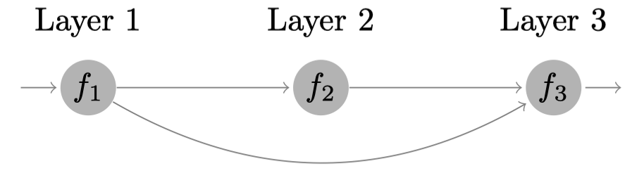
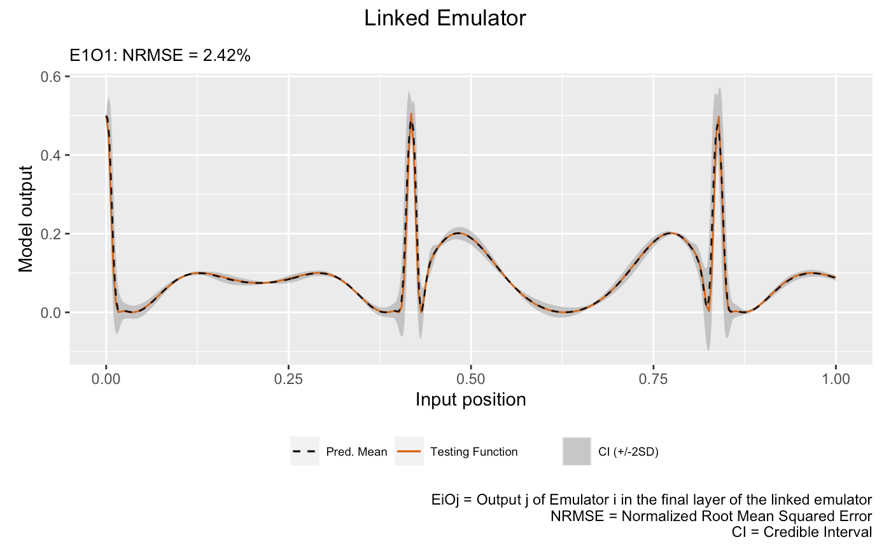

This vignette shows how to use the package to emulate a feed-forward system of three synthetic computer models.
Construct a synthetic system
We consider the following synthetic system

that involves three models defined by:
# Model 1
f1 <- function(x) {
(sin(7.5*x)+1)/2
}
# Model 2
f2 <- function(x) {
2/3*sin(2*(2*x - 1))+4/3*exp(-30*(2*(2*x-1))^2)-1/3
}
# Model 3
f3 <- function(x) {
x[1]*x[2]^2
}
# Linked Model
f123 <- function(x) {
f3(c(f1(x),f2(f1(x))))
}We then specify a seed with set_seed() from the package
for reproducibility
set_seed(999)and generate 10 training data points for Model 1 and 15 training data points for Model 2 and 3:
Emulation of Model 1
We construct and train a GP emulator with Matérn-2.5 kernel:
m1 <- gp(X1, Y1, name = "matern2.5")## Auto-generating a GP structure ... done
## Initializing the GP emulator ... done
## Training the GP emulator ... doneWe now validate the trained GP emulator by plot() by LOO
(alternatively, one can first use validate() to store the
LOO results before plotting with plot()):
plot(m1)## Initializing ... done
## Post-processing LOO results ... done
## Plotting ... done
Since we will use m1 later for linked emulation, we must
specify how it links to the emulators in the feeding layer through
linked_idx in dgp(). Since m1 is
in the first layer of the system, linked_idx refers to the
column indices of the global input X that will feed into
m1, and therefore we should have set
linked_idx = c(1) in dgp() when we first
constructed the emulator. Instead of re-training the emulator to provide
this information, we can simply use set_linked_idx() to add
this information to m1:
m1 <- set_linked_idx(m1, c(1))Emulation of Model 2
We construct a two-layered DGP emulator with Matérn-2.5 kernels to emulate the Model 2:
## Auto-generating a 2-layered DGP structure ... done
## Initializing the DGP emulator ... done
## Training the DGP emulator:
## Iteration 500: Layer 2: 100%|██████████| 500/500 [00:01<00:00, 264.72it/s]
## Imputing ... doneSince all outputs of emulators in the first layer is from
m1 and m2 uses the output from m1
as its input, we set linked_idx = c(1) in
dgp() above.
The following plot visualizes the LOO of the trained DGP emulator
m2:
plot(m2)Initializing ... done
Post-processing LOO results ... done
Plotting ... done
Emulation of Model 3
We now construct a three-layered DGP emulator with Matérn-2.5 kernels to emulate the Model 3:
## Auto-generating a 3-layered DGP structure ... done
## Initializing the DGP emulator ... done
## Training the DGP emulator:
## Iteration 500: Layer 3: 100%|██████████| 500/500 [00:04<00:00, 104.80it/s]
## Imputing ... doneSince m3 takes both outputs from m1 in
layer 1 and m2 in layer 2, we set
linked_idx = list( c(1), c(1) ). The first vector in the
list says that the output dimension 1 from all emulators (i.e.,
m1) in the first layer feeds into m3 and the
second vector in the list says that the output dimension 1 from all
emulators (i.e., m2) in the second layer feeds into
m3. Note that the dimensions in X3 is ordered
in consistent with linked_idx, i.e., the first and second
columns of X3 correspond to the output of m1
and m2 respectively.
The following plot visualizes the LOO of the trained DGP emulator
m3:
plot(m3)Initializing ... done
Post-processing LOO results ... done
Plotting ... done
Emulation of Linked Model
With the GP emulator m1 (for Model 1), the DGP emulator
m2 (for Model 2), and the DGP emulator m3 (for
Model 3) at hand, we are now ready to build the linked emulator by first
using combine() to construct the system hierarchy
struc and then applying lgp() for the linked
emulator.
Note that each layer of an emulator system is represented by a list.
In our case, each layer contains a single emulator. Therefore, we need
to put the corresponding emulator in a list using
list().
We can check the relations between emulators in different layers by
applying summary() to m_link:
summary(m_link)## +-----------+--------------+------+----------------------------+-----------------+
## | Layer No. | Emulator No. | Type | Connection | External Inputs |
## +-----------+--------------+------+----------------------------+-----------------+
## | Layer 1 | Emu 1 | GP | Global input: [1] | No |
## | Layer 2 | Emu 1 | DGP | Emu 1 in Layer 1: output 1 | No |
## | Layer 3 | Emu 1 | DGP | Emu 1 in Layer 1: output 1 | No |
## | | | | Emu 1 in Layer 2: output 1 | |
## +-----------+--------------+------+----------------------------+-----------------+
## 1. 'Connection' gives the indices of emulators and the associated output dimensions that are linked to the emulator referred by 'Layer No.' and 'Emulator No.'.
## 2. 'External Inputs' indicates if the emulator (referred by 'Layer No.' and 'Emulator No.') has external inputs that are not provided by the feeding emulators.For comparison, we construct a GP emulator for the whole system by generating 15 training data points from Model 1 and Model 2:
X_gp <- seq(0, 1, length = 15)
Y_gp <- sapply(X_gp, f123)
m_gp <- gp(X_gp, Y_gp, name = 'matern2.5')## Auto-generating a GP structure ... done
## Initializing the GP emulator ... done
## Training the GP emulator ... doneFinally, we validate both the GP emulator and the linked emulator at 300 testing data points over \([0,1]\):
# Testing input
test_x <- seq(0, 1, length = 300)
# Testing output
test_y <- sapply(test_x, f123)
# Validate GP emulator
m_gp <- validate(m_gp, x_test = test_x, y_test = test_y, verb = F)
# Validate linked emulator
m_link <- validate(m_link, x_test = test_x, y_test = test_y, verb = F)and plot them to compare their emulation performances:
# GP emulator
plot(m_gp, x_test = test_x, y_test = test_y, type = 'line', verb = F) +
plot_annotation(title = 'GP Emulator', theme = theme(plot.title = element_text(hjust = 0.5)))
# Linked emulator
plot(m_link, x_test = test_x, y_test = test_y, type = 'line', verb = F) +
plot_annotation(title = 'Linked Emulator', theme = theme(plot.title = element_text(hjust = 0.5))) It can be seen from the above plots that the linked emulator outperforms the GP emulator with significantly better mean predictions and predictive uncertainties.
In real-life applications, we are rarely able to generate this many testing data points from the underlying computer simulators to evaluate the emulators over the whole input space. However, we are still able to retain some available realizations from the computer simulators for the linked emulator validation. Say we were able to afford 20 runs of the above linked computer system:
# OOS testing input
test_x_oos <- sample(seq(0, 1, length = 300), 20)
# OOS testing output
test_y_oos <- sapply(test_x_oos, f123)Then, we can conduct OOS validations for the GP emulator:
plot(m_gp, test_x_oos, test_y_oos, style = 2)## Initializing ... done
## Post-processing OOS results ... done
## Plotting ... done
and the linked emulator:
plot(m_link, test_x_oos, test_y_oos, style = 2)## Initializing ... done
## Post-processing OOS results ... done
## Plotting ... done which show that the linked
emulator outperforms the GP emulator with significantly better
predictive accuracy and lower NRMSE.
which show that the linked
emulator outperforms the GP emulator with significantly better
predictive accuracy and lower NRMSE.